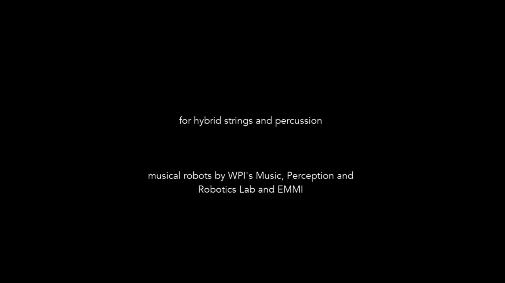

Mechanophore
PROJECT DESCRIPTION / PROGRAM NOTES
Mechanophore was inspired by the force-sensitive molecular units of the same name. As mechanophores are subjected to physical forces, they activate chemical reactions that can communicate their state (e.g. color change) or even heal themselves. The musical work represents this process of increasing tension to the point of ring opening, out of which a texture whose nature ascends and heals emerges. The second section represents a particular mechanophore, spiropyran, more literally by tracing the molecule’s skeletal structure in its pitch contours. Just as force makes spiropyran transform into a different molecule (merocyanine), the musical theme morphs into new configurations as it progresses. After another ring opening, the final section of the work represents interactions between individual polymers within a material, which can be characterized by entanglement, bridging, paths of motion, qualities, sizes, velocities, densities and loops.
More philosophically, the piece shows the wonder and complexity of the microscopic world through sonic elements that border on the threshold of perceptibility. As polymer science brings the distinction between the ideas of organic and synthetic into focus, the music illustrates the continuum between these poles through virtual and acoustic instruments (including the robotic string instruments PAM and Cyther) that are combined and manipulated in a panoply of ways. Spiropyran elastomers were used as membranes for PVC drums played by robotic actuators made from 3D-printed PLA, thus connecting the metaphors of the work to its physical realization.
Musical robots were design and built by WPI’s Music, Perception and Robotics Lab and EMMI.
MEDIA

▶